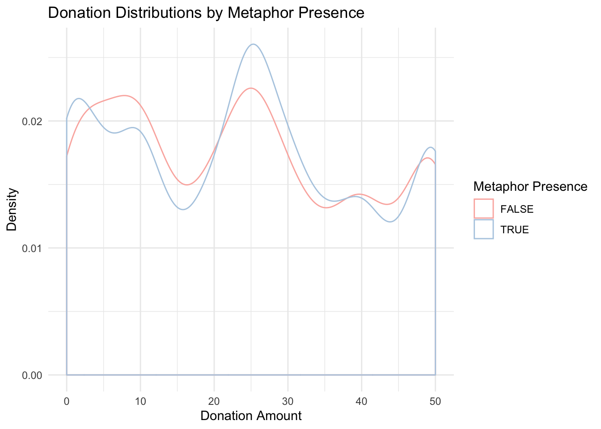

2 Data Overview
2.1 Tabular Summaries
Contingency table: Metaphor Condition x Sex Condition
## cond_sex male female
## cond_metaphor
## literal 761 801
## battle 757 757
## journey 719 790
##
## cond_sex male female
## cond_metaphor
## literal 0.166 0.175
## battle 0.165 0.165
## journey 0.157 0.172Contingency table: Participant Gender x Sex Condition
## cond_sex male female
## gender
## M 1202 1205
## F 1020 1119
## NB 13 12
## OO 2 12
##
## cond_sex male female
## gender
## M 0.262 0.263
## F 0.222 0.244
## NB 0.003 0.003
## OO 0.000 0.003Proportion under each gender
prop.table(table(trials$gender))*100##
## M F NB OO
## 52.4972737 46.6521265 0.5452563 0.3053435Contingency table: Self-Cancer Treatment x Friends/Family-Cancer Treatment
## ff_cancer N Y OO
## self_cancer
## N 1543 2710 72
## Y 24 190 1
## OO 10 18 17
##
## ff_cancer N Y OO
## self_cancer
## N 0.337 0.591 0.016
## Y 0.005 0.041 0.000
## OO 0.002 0.004 0.004Contingency table: Education achievement
## <HS HS A B M P D OO
##
## 26 997 527 2137 668 122 89 19
##
## <HS HS A B M P D OO
##
## 0.006 0.217 0.115 0.466 0.146 0.027 0.019 0.004Contingency table: Socioeconomic status
## <10k 10-25k 25-50k 50-75k 75-100k 100-150k >150k OO
##
## 621 686 1204 972 527 325 126 124
##
## <10k 10-25k 25-50k 50-75k 75-100k 100-150k >150k OO
##
## 0.135 0.150 0.263 0.212 0.115 0.071 0.027 0.027Summary statistics of participant age and self-reported past donations (trailing 12-months)
summary(trials$age)## Min. 1st Qu. Median Mean 3rd Qu. Max.
## 3.00 27.00 34.00 37.41 45.00 1189.00summary(trials$past_donations)## Min. 1st Qu. Median Mean 3rd Qu. Max.
## 0.000 1.000 2.000 6.916 5.000 2500.000Average participant was 34 years old and had given 2 donations in the past 12-months.
A quick summary statistic of donations for the presence of metaphor and each metaphor condition.
with(trials, tapply(donation, cond_anymet, summary))## $`FALSE`
## Min. 1st Qu. Median Mean 3rd Qu. Max.
## 0.0 10.0 25.0 23.6 39.0 50.0
##
## $`TRUE`
## Min. 1st Qu. Median Mean 3rd Qu. Max.
## 0.00 10.00 25.00 23.67 35.00 50.00with(trials, tapply(donation, cond_metaphor, summary))## $literal
## Min. 1st Qu. Median Mean 3rd Qu. Max.
## 0.0 10.0 25.0 23.6 39.0 50.0
##
## $battle
## Min. 1st Qu. Median Mean 3rd Qu. Max.
## 0.0 10.0 25.0 24.2 39.0 50.0
##
## $journey
## Min. 1st Qu. Median Mean 3rd Qu. Max.
## 0.00 10.00 25.00 23.13 35.00 50.00cm <- model.matrix(~ 0 + age + past_donations + gender + self_cancer + ff_cancer + education + socioeconomic + sympathy + urgent, data=trials) %>%
cor(use="pairwise.complete.obs")
rownames(cm) <- paste(paste(1:nrow(cm), ".", sep = ""), rownames(cm))
colnames(cm) <- 1:nrow(cm)
heatmap(cm, symm = T, margins = c(1,1), Rowv = NA, col = colorRampPalette(c("blue", "white", "red"))(20))
There don’t appear to be any strong inter-variable correlations (naturally, we do see some strong intra-variable correlations, e.g. male gender and female gender).
2.2 Visualization Summaries
Visualize the distributions of the conditions and demographic variables against donation amounts
## Scale for 'colour' is already present. Adding another scale for 'colour',
## which will replace the existing scale.
## Scale for 'colour' is already present. Adding another scale for 'colour',
## which will replace the existing scale.## Scale for 'colour' is already present. Adding another scale for 'colour',
## which will replace the existing scale.# g = ggplot(trials) + ptheme +
# theme(axis.ticks = element_line(color = "white")) +
# geom_line(aes(donation, linetype=cond_metaphor), stat = "density") +
# scale_linetype_manual(values = c(1,2,9), labels = c("literal" = "Literal", "battle" = "Battle", "journey" = "Journey")) +
# scale_x_continuous(labels = scales::dollar) +
# coord_cartesian(ylim = c(0.01, 0.028)) +
# labs(x = "Donation Amount", y = "Density", linetype = element_blank(), title = element_blank())
#
# g
# ggsave("metaphor_donation_density.png", g, width = pwidth, height = 2.7, bg = "transparent")## Scale for 'colour' is already present. Adding another scale for 'colour',
## which will replace the existing scale.## Scale for 'colour' is already present. Adding another scale for 'colour',
## which will replace the existing scale.## Scale for 'colour' is already present. Adding another scale for 'colour',
## which will replace the existing scale.## Scale for 'colour' is already present. Adding another scale for 'colour',
## which will replace the existing scale.## Scale for 'colour' is already present. Adding another scale for 'colour',
## which will replace the existing scale.## Warning: Removed 7 rows containing missing values (geom_smooth).## Warning: Removed 19 rows containing missing values (geom_smooth).2.3 Duration Statistics
How long did participants spend on the main stimulus and overall?
summary(trials$rt_trial) / (1000) # in seconds## Min. 1st Qu. Median Mean 3rd Qu. Max.
## 5.061 26.736 45.612 59.613 71.813 3598.752summary(trials$total_time) / (1000*60) # in minutes## Min. 1st Qu. Median Mean 3rd Qu. Max.
## 0.8248 3.1519 4.4563 5.5495 6.4615 110.5542ggplot(trials) + itheme +
geom_density(aes(total_time/(1000*60))) +
labs(x = "Total Duration (mins)", y = "Density", title = "Total Duration Distribution")Participants spent a median time of 45.6 seconds on the main stimulus and a median time of 4.43 minutes overall.
Take a look at the fastest and slowest participants to see if they are completely unreasonable outliers
# only useful when run interactively as an Rmd
# trials %>% arrange(rt_trial) %>% head()# only useful when run interactively as an Rmd
# trials %>% arrange(desc(rt_trial)) %>% head()Some of the responses do look a little fishy, but excluding them would be nontrivial. Perhaps set aside for future work.
2.4 Coarse Donation Behavior
First, the count and proportion of participants, grouped by gender, then sex condition, then metaphor condition, with donations at three natural breaks: $0, $25, and $50. These natural breaks (minimum, default/middle, maximum) might signal certain behavior (e.g. people often giving nothing, staying with the default value).
Summary statistics of donation amounts:
summary(trials$donation)## Min. 1st Qu. Median Mean 3rd Qu. Max.
## 0.00 10.00 25.00 23.64 36.00 50.00The mean donation was $23.53 and the median was $25. However, the donation distribution plot above appears to be somewhat trimodal, so this statistics may be unreliable.
Participants, by demand of the experiment, may have had mental representations of possible donations, perhaps small, medium, and large amounts. These may correspond to standard values, falling onto certain donation values. Based on inspection, participants tended to go toward donations at $5 increments. Therefore, the smallest standard values they may donate were $0 and $5. The medium standard values were $20, $25, and $30, surround the defaut value of $25. The large standard values were $45 and $50.
trials$donation_narrow_group = ""
trials[trials$donation %in% c(0, 5), "donation_narrow_group"] = "small"
cat("Proportion of small donations: ", round(mean(trials$donation_narrow_group == "small"), 3), "\n")## Proportion of small donations: 0.179trials[trials$donation %in% c(20, 25, 30), "donation_narrow_group"] = "medium"
cat("Proportion of medium donations: ", round(mean(trials$donation_narrow_group == "medium"), 3), "\n")## Proportion of medium donations: 0.287trials[trials$donation %in% c(45, 50), "donation_narrow_group"] = "large"
cat("Proportion of large donations: ", round(mean(trials$donation_narrow_group == "large"), 3), "\n")## Proportion of large donations: 0.152# the proportion of participants who donated one of the above amounts
with(trials, mean(trials$donation_narrow_group %in% c("small", "medium", "large")))## [1] 0.617884418% of participants donated one of the coarse small donation amounts ($0 and $5). 29% of participants donated one of the coarse medium donation amounts ($20, $25, $30). 15% of participants donated one of the coarse large donation amounts ($45 and $50).
In total, 62% of participants donated one of these coarse donations.
trials %>%
ggplot(aes(donation_narrow_group, fill = cond_metaphor)) + itheme +
geom_bar(position = position_dodge()) +
labs(title = "Number of Standard Donations given Metaphor Condition", subtitle = "e.g. \"small\" donations are $0 or $5", x = "Donation Group", y = "# of Participants") +
scale_fill_brewer(palette = "Pastel1")Metaphor may dictate small differences here between groups of standard donations, we’ll model these in a bit.